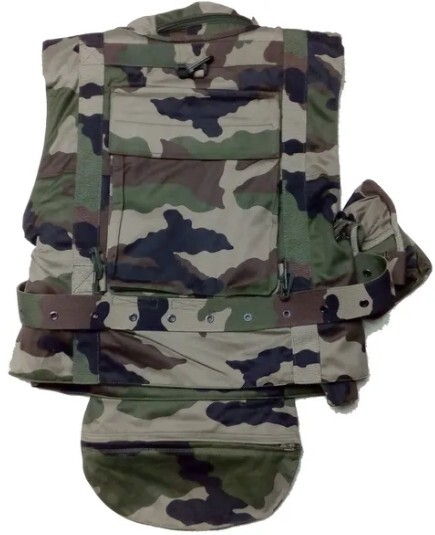

Équipements Militaire
Les missions des militaires sont essentielles pour assurer la sécurité nationale, l'intervention en zones de crise et les secours humanitaires.
-
Fusil d'assaut
-
Gilet pare-balles
-
Casque
Un fusil d'assaut est l'arme standard utilisée par les militaires pour les missions sur le terrain.

Le gilet pare-balles protége les soldats contre les balles et les éclats d'obus.
Le casque militaire protège la tête du soldat contre les impacts et les éclats.